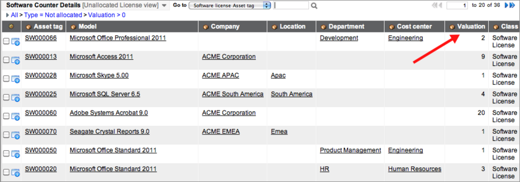

Managing Software Licenses
| |
Note: This article applies to Fuji and earlier releases. For more current information, see Software License Management at http://docs.servicenow.com
The ServiceNow Wiki is no longer being updated. Visit http://docs.servicenow.com for the latest product documentation. |
Contents
1 Overview
The Software Asset Management application allows asset managers to track and organize the number of licenses available to the organization. Software licenses are based on models that you create to organize software licenses in meaningful ways. Different license calculation types determine how software is counted.
Software licenses can also be associated with a contract which enables a company to cover software licenses for multiple assets or users. For more information, see Software Contracts.
2 Licensing Models
Supported license models are:
- Individual: Given to individuals.
- Bulk allocated: Allocated to users via entitlements.
- Bulk not allocated: Model given to users and contains details such as who has a license or where the license is located. This model is not tracked.
3 Adding New Software Licenses
- Navigate to Software Asset Management > Software Licenses.
- Click New.
- Fill in the fields, as appropriate (see table).
| Field | Description | |
|---|---|---|
| Display name | [Read-only] Name of the software license. Created automatically. | |
| Model category | Model category for the software license. Software License is selected by default. | |
| Model | Software model of the license you are matching to. For example, Microsoft Excel. | |
| Rights | Number of entitlements to be granted by this license. If an enterprise contract is attached to the license, the Rights field does not display. | |
| License Key | License key of the software. | |
| General | ||
| Asset tag | The asset tag is the serial number and bar code for tracking the software license. | |
| State | Current status of the software license, such as On order or In use. | |
| Assigned to | Most recent user that is currently assigned to this software license. | |
| Managed by | User or department that maintains the software license. Can be different than the owner. For example, a specified user can own a software license, but the IT department manages it. | |
| Owned by | User or department with financial ownership of the software license. Can be different than the manager. | |
| Parent | Parent asset of the software license, if any. For example, the parent asset of Microsoft Word software is often the Microsoft Office suite. | |
| Class | [Read-only] Automatically created as Software License. | |
| License metric | [Optional] A single metric which the software license is counted against. This field is available starting with the Eureka release. | |
| Serial number | Unique serial number assigned for identification. | |
| Substate | More details about the software license state. The available substate settings depend on the State selected. For example, if you select the Retired state, the substate options available are Disposed, Sold, Donated, and Vendor credit. | |
| Location | Where the license is used. For example, a specific site, country, or region. | |
| Department | Department of the person Assigned to this software license. | |
| Company | Company that published the software. | |
| Assigned | Date when the software license was most recently assigned. | |
| Installed | Date when the software license was most recently installed. | |
| Comments | Information about the software license that would be helpful for others to know. | |
For information about the fields in the Financial, Contracts, Asset Entitlements and User Entitlements sections of the form, see Creating Assets.
4 Enterprise and Subscription Licenses
Enterprise licenses and subscription licenses are common ways of purchasing software.
4.1 Creating Enterprise Licenses
Enterprise licenses are typically for large customers and provide some flexibility, an agreed upon discount price, and a mechanism for easy administration. Use the Contract Management application to set a software license as enterprise or subscription.
- Navigate to Contract Management > Software Licenses.
- Click New.
- Select a License type of Enterprise.
- Fill in as many of the remaining fields on the Contract form as you can and click Submit.
- Reopen the contract.
- In the Assets Covered related list, click New.
- In Asset, select the software covered by the contract.
- In Date added, select the date the software license was added to the contract. The date can be in the past, the present, or the future.
- (Optional) In Date removed, select the date asset was, or will be, removed from the contract.
- Click Submit.
- Navigate to Software Asset Management > Reconciliation > Software Counters.
- Click the software specified in step 6.
- Click Count Licenses.
- The licenses are listed under Software Counter Results. The licenses display as 0, but you are not out of compliance because you have an enterprise license with an enterprise contract. Once an enterprise contract is associated with software, all users are entitled when the licenses are counted.
| |
Note: In the Software Licenses list, enterprise licenses display 0 in the Rights column. The concept of rights is not used with enterprise licenses. |
4.2 Creating Subscription Licenses
A subscription license is an annual or multi-year license that provides the right to use the software and to obtain software updates and service.
- Navigate to Contract Management > Software License.
- Click New.
- Select a License type of Subscription.
- Fill in as many of the remaining fields on the Contract form as you can and click Submit.
- Open the contract.
- In the Assets Covered related list, click New.
- In Asset, select the software covered by the contract.
- In Date added, select the date the software license was added to the contract. The date can be in the past, the present, or the future.
- (Optional) In Date removed, select the date asset was, or will be, removed from the contract.
- Click Submit.
- Navigate to Software Asset Management > Reconciliation > Software Counters.
- Click the software specified in step 6.
- Click Count Licenses.
- The licenses are listed under Software Counter Results.
5 Software License Entitlements
Software entitlements enable asset managers with the asset role to define the people or machines to which a specific, purchased software license is assigned. Asset managers allocate a license to entitle a user or machine to use the license. For example, a company purchases a software license for 100 rights. The software entitlement specifies the 100 employees or machines that are rightfully assigned a license. If the ServiceNow Discovery tool is used and it finds the software installed on 200 machines, the asset manager can identify the employees or computers that have the software installed without a license. The asset manager can ask users to remove the software from their computers.
Built-in rules prevent entitling more licenses than have been purchased. License entitlements use specific software license asset tags. In addition to the mandatory asset tag, an individual person and a specific configuration item can be assigned.
The benefits of using software entitlements include:
- If the overall license allotment is exceeded, the asset manager can rapidly address the problem and return to compliant status by either removing unauthorized software or ordering more licenses.
- If the license allotment is not being used completely, the asset manager can respond by lowering the number of licenses purchased in the future.
5.1 Creating Entitlements
You create software entitlements for both CIs and users from the same License Entitlement form.
| |
Note: Additionally, you can create these entitlements from Asset Management. Navigate to one of these locations and click New:
|
- Navigate to Software Asset Management > Software Licenses.
- Click an Asset tag.
- Click Add Entitlement and complete the License Entitlement form using the fields in the table.
- Click Submit.
- The view returns to the Software License form.
- Set an optional condition in the Allocated conditions section.
- The configuration items given this license must meet the specified conditions. For example, you might set a condition that allocates this software license to CIs in a certain department only.

- Click Update.

{kind=link}
| Field | Description |
|---|---|
| Display name | [Read-only] Name used in record lists. |
| Assigned to | User of the entitlement token. |
| Allocated to | The configuration item consuming the license token. |
| Licensed by | License granting this token. |
| Cached | [Read-only] Internal flag set and used by software counters. |
6 Upgrading and Downgrading Licenses
The concept of upgrading and downgrading licenses is built into the Software Asset Management application. This is helpful when reconciling licenses. Downgrading a license is the process of purchasing a license, but using an earlier version. Upgrading a license occurs when a newer version of a license is not purchased, but you are allowed to use the newer version. Downgrading is more common than upgrading.
Any version defined as a downgrade child that does not have entitlements and a license can be counted as an installation of the upgrade parent. Use this method to avoid having to uninstall unlicensed versions of software running in your environment. When you define an unlicensed version as a downgrade child of a licensed version, the system creates a software model record for the unlicensed version with an upgrade path to the licensed version. If you delete the downgrade child from the licensed version's record, ServiceNow automatically deletes the Software Model record for the unlicensed version. This functionality is available starting with the Dublin release.
| |
Note: If the downgrade child has either a license or an entitlement, it must also have a counter, which counts all installations of the downgrade child against it's own license. |
For example, you have licenses for the software model Microsoft Word 2010, but no licenses or entitlements for Word 2007. Discovery finds installations of Word 2007 being used in your organization. Rather than force users to uninstall all instances of this unlicensed version, you decide to count installations of Word 2007 against your Word 2010 license. To do this, you configure Word 2007 as a downgrade child in the Word 2010 Software Model record. ServiceNow automatically creates a Software Model record for Word 2007 which specifies Word 2010 as the upgrade parent.
If a software version has a downgrade child or an upgrade version that can be counted against the parent, the number of installs counted is restricted to the number of available rights of the parent. For example, Microsoft Word 2010 has a downgrade to Word 2007. Both versions have an active counter. Microsoft Word 2010 finds all entitled copies of Word 2007, as well as take any out of compliance installs from that downgrade counter up until the available downgrade rights are used. However, if Microsoft Word 2010 only has 100 rights, then the maximum number of rights to be taken from the downgrade counter is 100. This feature is available starting with the Eureka release.
You can set the start and end dates for a software upgrade parent and downgrade child to be valid. The software counter counts the upgrade and downgrade licenses within the selected dates. If the software counter runs outside of the date range, the upgrade and downgrade licenses is not counted.
| |
Note: If an upgrade parent or downgrade child is set on the software model, it applies to all licenses of that model. If set on the software license, it applies specifically to that license. |
{kind=link}
| View previous version examples |
|---|
|
6.1 Upgrading a License
There are two methods to upgrade a software license.
To identify an upgrade parent from a Software License record:
- Navigate to Software Asset Management > Software Licenses.
- Select a license.
- Click New in the Software Upgrade and Downgrades related list.
- Select a software model in the the Upgrade parent field.
- Select the Start and End dates.
- Click Submit.
To identify an upgrade parent from a Software Model record:
- Navigate to Software Asset Management > Software Models.
- Select a model.
- In the Upgrade section, double-click under the Upgrade parent column heading.
- Select a software model from the list.
- Click the green check mark.
{kind=link}
| |
Note: If an upgrade parent is set on the software model, it applies to all licenses of that model. Upgrade parents set on the software license applies specifically to that license. |
6.2 Downgrading a License
To identify an downgrade child from a Software License record:
- Navigate to Software Asset Management > Software Licenses.
- Select a license.
- Click New in the Software Upgrade and Downgrades related list.
- Select a software model from the list.
- Select the Start and End dates.
- Click Submit.
To identify a downgrade child from a Software Model record:
- Navigate to Software Asset Management > Software Models.
- Select a model.
- In the Downgrade section, double-click under the Downgrade child column heading.
- Select a software model from the list.
- Click the green check mark.
{kind=link}
| |
Note: Downgrade children set on the software license applies specifically to that license. If a downgrade child is set on the software model, it applies to all licenses of that model. |
7 Viewing Unallocated Software Licenses
Part of managing software licenses is knowing what licenses your organization owns but has not allocated. If no one needs the unallocated licenses, this can be noted so that fewer licenses are purchased in the future.
- Navigate to Software Asset Management > Unallocated Licenses.
- This list is also available from Asset Management > Stock > Unallocated Licenses.
- 
- View the Software Counter Details list, Unallocated License view.
- The Valuation column lists the number of unallocated licenses for the given software model.
- For detailed information about the selected license, click a name in the Model column to display the Software Model form, Unallocated License view.
{kind=link}
8 Merging Software Licenses
If you have multiple software licenses that are linked to the same model, you can merge these individual licenses into one new consolidated license. This feature is available starting with the Eureka release. To be merged, the individual licenses must meet the following requirements:
- The licenses cannot already be merged into another consolidated license.
- The information in the following fields must match for each license:
- Model
- Allocated condition
- Assigned condition
- Company
- Location
- Department
- Cost center
- State
- The licenses must have the same set of software upgrades and downgrades and the same set of assets covered. To verify this information, go to Software Asset Management > Software Licenses and select a license.
- For upgrades and downgrades, go to the Software Upgrade and Downgrades related list.
- For assets covered, go to the Assets Covered embedded list in the Contracts related list.
If a license can be merged, Merge with similar licenses appears under Related Links on the Software License form.
To merge a license:
- Open a license.
- Click the Merge with similar licenses link.
- Displays a dialog box with a message stating that the merge process is irreversible and that license keys are not merged.
- Click OK.
- All qualifying licenses, including the current license, are merged into a new consolidated license. An informational message appears until the user is redirected to the newly merged license.
All qualifying licenses are merged into a new consolidated license unless they can be matched to an existing consolidated license. If they are merged into a new consolidated license, the Asset tag field is cleared. After merging, the merged license is marked as Is merged license (field = true) and the Merged into field is set to this license for the consolidated licenses.
| |
Note: Licenses that are marked as merged are not counted. |
For the consolidated licenses:
- The number of rights are summed up into a new count.
- The asset and user entitlements are transferred to the new license.
- The expense lines and assets on contract rate cards are transferred to the new license.
- The set of software upgrades and downgrades, as well as the set of assets covered, are copied to the new license.
- The cost of each individual license is summed up into the new license using the system base currency.
- A history of the consolidated licenses and where they went is maintained.